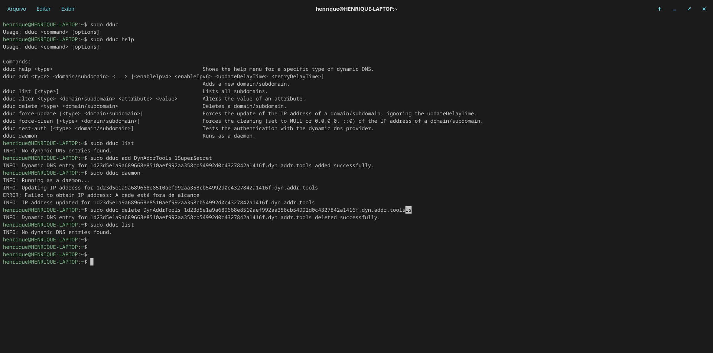
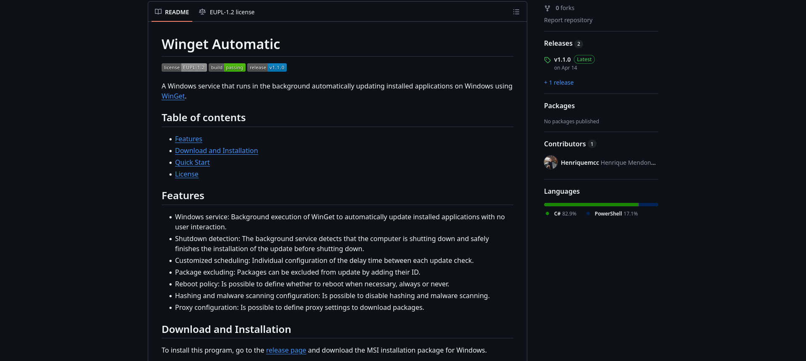
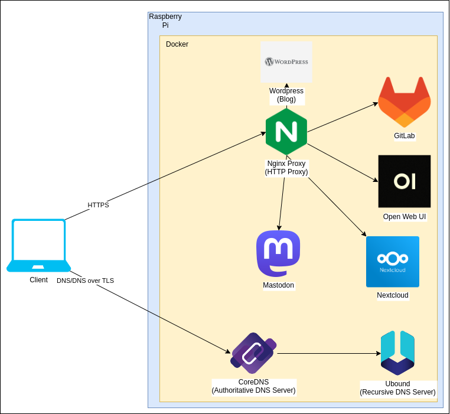

About me

Hello, my name is Henrique Mendonça. I have a degree in Computer Science from Pontifical Catholic University of Minas Gerais (PUC Minas), where I am currently specializing in Cloud Computing at the postgraduate level. I work with Linux environments and Cloud platforms (AWS, Azure and GCP), focusing on CI/CD pipeline development, Docker containerization and application integration. I am fluent in English (Cambridge B2 First certified) and hold the AWS Cloud Practitioner and Google Cloud Computing Foundations certifications.
Skills
Projects
Personal projects

Dynamic DNS Update Client
A lightweight Dynamic DNS (DDNS) client to automatically update domain and subdomain IP addresses across multiple providers.

Winget Automatic
A Windows service that runs in the background automatically updating installed applications on Windows using WinGet.

Infrastructure
Infrastructure as code in Docker for my self-hosted applications on my Raspberry Pi.
Projects developed at PUC Tec

Legião dos Corretores's System Prototype
Prototype of the Back-End System in Kotlin Spring Boot, developed in the Startup Support Service at PUC Tec (SA PUC Tec) to meet the demand of the startup Legião dos Corretores.

PUC Tec's Demand Registration System Prototype
Prototype of the Back-End of PUC Tec's Demand Registration System, developed in the Startup Support Service (SA PUC Tec) to meet an internal demand of PUC Tec.
Projects developed at WebTech

Docker Lab
A laboratory covering everything from basic Docker commands to application containerization and deployment on Microsoft Azure.

Linux Lab for Beginners
A laboratory covering how to install, configure and use Linux distributions for those who have never used Linux.

Web Server Creation Lab in Microsoft Azure
A laboratory covering how to create a web server in Microsoft Azure.

Automatic Deployment with GitHub Actions Lab
A laboratory covering how to create an automatic deploy workflow with GitHub Actions.
Projects developed in Alura's courses

Cloud DevOps Immersion
Containerization of a back-end application to manage students, courses and enrollments, using Docker and the deployment of this application on Google Cloud's Cloud Run.

Forum
Back-end of a forum about programming, developed in Kotlin and Spring Boot during Kotlin and Spring Boot courses at Alura.

Alura Space
Front-End of an image gallery application, developed in Python and Django during Django courses: create applications in Python at Alura.
Projects developed in the Computer Science course at PUC Minas

OMNeT++ - Docker
Containerization of OMNeT++ IDE in Docker, developed in Dockerfile for the subject Trabalho de Conclusão de Curso II (Final Project II) of the Computer Science course at PUC Minas.

LLM Based Conversational Assistant
Conversational assistant based in LLM, developed in Python and Tkinter for the subject Tópicos em Computação III - Text Mining (Topics in Computer Science III - Text Mining) of the Computer Science course at PUC Minas.

Robot Exterminator
Game developed in Unity for the subject Trabalho Interdisciplinar IV (Interdisciplinary Work IV) of the Computer Science course at PUC Minas.

Bug Watch
Application developed in Python, Flask and TensorFlow for the subject Trabalho Interdisciplinar VI (Interdisciplinary Work VI), that uses computer vision to classify bugs.

Program that Simulates a Consensus-based Faliure Detector
Program that Simulates a Consensus-based Faliure Detector developed in Kotlin for the subject Computação Distribuída (Distributed Computing) of the Computer Science course at PUC Minas.

Program that Simulates a Distributed Mutual Exclusion
Program that simulates a distributed mutual exclusion, developed in Kotlin for the subject Computação Distribuída (Distributed Computing) of the Computer Science course at PUC Minas.

Cancer Cell Recognition Program in Pap Smears
Program that recognizes cancerous cells in Pap smear tests, developed in Python, Tkinter and TensorFlow for the subject Processamento e Análise de Imagens (Image Processing and Analysis) of the Computer Science course at PUC Minas.

Program for Optimization and Planning of Store Locations
Program for Optimization and Planning of Store Locations, developed in Java for the subject Projeto e Análise de Algoritmos (Project and Analysis of Algorithms) of the Computer Science course at PUC Minas.

Paint
Program that allows to draw line, dot, circumference and polygon, developed in Kotlin for the subject Computação Gráfica (Computer Graphics) of the Computer Science course at PUC Minas.

8-Puzzle Game
8-Puzzle Game developed in HTML, CSS and JavaScript for the subject Inteligência Artificial (Artificial Intelligence) of the Computer Science course at PUC Minas.

Movies Portal
Movies Portal developed in HTML, CSS and JavaScript for the subject Desenvolvimento de Interfaces Web (Web Interface Development) of the Computer Science course at PUC Minas.